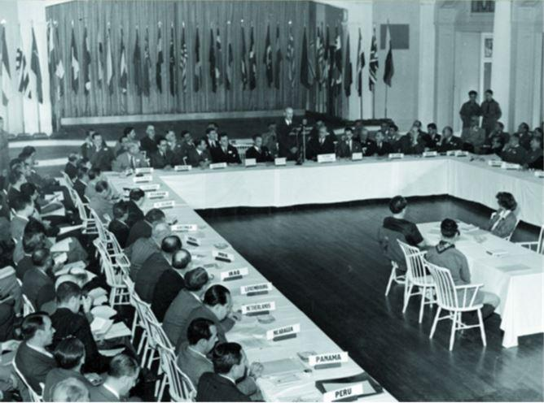
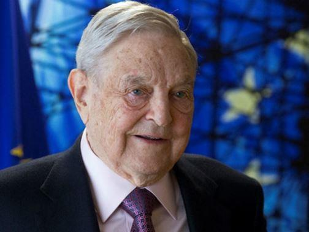
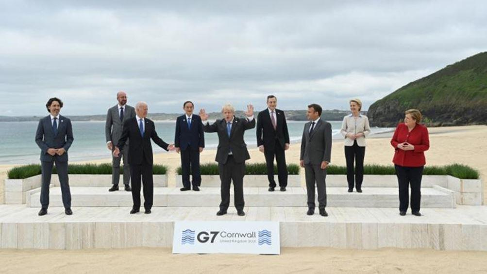
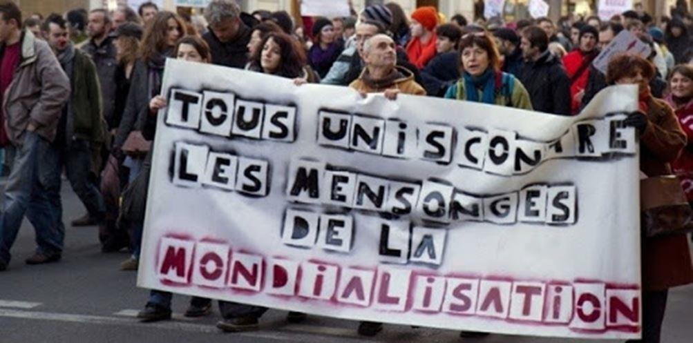

À la lecture de la déclaration du 3 février dernier sous le titre « Coopération multilatérale pour une reprise mondiale1 » signée par Emmanuel Macron (Président de la République Française), Angela Merkel (Chancelière allemande), Macky Sall (Président du Sénégal), Antonio Guterres (ex Premier Ministre du Portugal et Haut-Commissaire pour les réfugiés aux Nations Unies, aujourd'hui secrétaire général des Nations Unies), Charles Michel (Président du conseil européen), Ursula Von Der Leyen (présidente de la commission européenne) peut-on encore exprimer le moindre doute quant à l'acceptation par les dirigeants et principaux acteurs de l'Union Européenne d'une soumission à la notion d'ordre mondial ?
Est-ce un hasard si cette déclaration rejoint en tous points le programme du World Economic Forum2 de Klaus Schwab3 dont les principaux arguments sont exposés dans la seconde partie de cet article. Cette organisation se définit elle-même comme ayant "une vocation internationale avec pour objectif majeur de solliciter les principaux dirigeants politiques, commerciaux, culturels et autres du monde entier à réfléchir et mettre en œuvre des programmes mondiaux, régionaux et industriels."
L'argumentation de la présentation paraît convaincante et attractive mais n'est-ce point qu'une façade très pernicieuse d'une réalité qui serait tout autre et s'abriterait derrière l'idée d'une aide aux plus démunis et aux plus défavorisés, ce qui en soi, est une noble cause mais masquerait en vérité la préparation d'un "lissage" des niveaux de population à travers le monde. Par "lissage" il faut comprendre une mise à niveau égalitaire sur tous les points de façon à transformer l'individu en un être uniforme sur tous les plans. Il est indéniable que cela entraînerait obligatoirement un sacrifice conséquent de la part d'une partie des peuples pour permettre à l'autre partie de s'élever.
La mise en œuvre d'un tel projet d'organisation d'un "Ordre mondial" ne doit rien à un esprit philanthropique mais répond pour l'essentiel au besoin de structurer le monde économique afin que les profits des oligarchies financières les plus puissantes soient non seulement préservées mais surtout optimiser pour les préserver, voire les accroître toujours plus. L'égalité entre tous supprimera les conflits des États-nations, ces grands responsables des guerres du XXème siècle4.
Les accords de Bretton Wood au sortir de la seconde guerre mondiale ont promu, à l'instigation des États-Unis d'Amérique, la création d'institutions dont l'objectif était de sécuriser le monde par l'établissement de règles et la mise à disposition de moyens financiers (FMI, BIRD, GATT).
Au demeurant l'esprit était de promouvoir le maintien de la paix et le développement de l'économie dans son ensemble.
Le monde change rapidement par l'émergence de nouvelles puissances, le bouleversement des comportements et des activités de toutes natures par les évolutions et les progrès des technologies mais les institutions interétatiques peinent à suivre.
La crise COVID-19 en a été un facteur déclencheur de prise de conscience de cet état de fait par les grands responsables politiques. L'oligarchie financière a mesuré l'incidence négative sur l'équilibre économique du monde des affaires de cette absence de réactivité des institutions planétaires et perçu le danger susceptible de fragiliser leur position dominante.
Le sommet de Davos de janvier 2021 a permis de "recadrer" les politiques et de leur faire prendre conscience de l'urgence d'intervenir comme le montre notamment cette déclaration du 3 février dernier signée par les responsables des 2 pays phares de l'Union Européenne, la France et l'Allemagne, le secrétaire général de l'ONU et les responsables du Conseil européen et de la Commission européenne.
Petit à petit se mettent en place des outils destinés à créer cette égalité entre tous tels par exemple le projet de la fondation Gates de vacciner des populations en injectant en même temps des nanoparticules destinées à remplacer le carnet de vaccination "papier". En soi le projet pourrait sembler séduisant mais demain quels types de nanoparticules seront injectées à chacun de nous ? la nanoparticule GPS, la nanoparticule de suivi du comportement, la nanoparticule de l'état de santé, la nanoparticule de régulation du désir, la nanoparticule de régulation de l'obésité ????
Déjà à Singapour les smartphones servent à suivre la population de façon à pouvoir éventuellement retracer d'éventuels cas contacts en cas de propagation d'une épidémie. Aujourd'hui l'information reste stockée dans le portable et n'est utilisée par les autorités qu'en cas de nécessité. Qui nous dit que demain nos téléphones ne serviront pas de traceurs de nos activités ?
Si ce projet de réorganisation et de structuration du monde semble si intéressant comment se fait-il que des organisations quasi-secrètes se réunissent et travaillent sur certains sujets que le commun des mortels ignore totalement.
Le forum de Davos est relativement bien connu du grand public, les médias ne se privent pas de nous rappeler son existence à chacune de ses réunions annuelles mais lequel est capable de nous informer sur la nature des débats et sur les conclusions et les projets qui en sont issus ? Que savons-nous des décisions prises par ces grands décideurs ?
D'autres groupes beaucoup plus secrets œuvrent en silence tels le Groupe Bilderberg, la Trilatérale, les fondations de grands financiers telles, par exemple, celles de Melinda et Bill Gates, Rothschild, Rockfeller, Soros et son Open Society Foundation et tout un ensemble de groupes de réflexion très influents sur les dirigeants politiques qui ne sont en fait que des pantins au service de cette oligarchie financière.
Ces détenteurs d'immenses fortunes se considèrent comme les élites de ce monde et usent de leur pouvoir d'influence sur les États-nations. Les aspects philanthropiques de leurs actions ne sont qu'apparents et cachent une réalité dont l'humanité doit prendre conscience très rapidement sous peine d'être entraînée vers un monde ou l'Homme n'aura de valeur que dans la mesure où il est utile, serviable, taillable et corvéable à merci, appelé à disparaître dans le cas contraire.
Les États-nations doivent disparaître au profit d'une régionalisation programmée pour obéir ou disparaître. L'Union Européenne travaille à dupliquer le modèle allemand des « landers » et on peut citer à titre d'exemple la nouvelle entité née en France : la collectivité européenne d'Alsace5 (existant officiellement depuis le 1er janvier 2021).
Qui a envie de vivre dans un monde totalement robotisé pour la production manufacturière, isolé en télétravail, coupé de tout lien social autre que familial, soumis à un revenu universel qui sera supprimé à tout individu récalcitrant.
La crise sanitaire est soigneusement entretenue dans notre pays (état d'urgence sanitaire prolongé jusqu'au 31 décembre 20216) pour servir les intérêts de ce projet en culpabilisant la population par des discours délibérément anxiogènes mais non sérieusement argumentés. La privation des lieux de plaisir, de loisirs et autres dérivatifs est destinée à habituer l'individu à une vie plus austère en l'enfermant dans une coquille pour le déstabiliser psychologiquement et le fragiliser.
Le sacrifice de générations d'adolescents, d'étudiants est nécessaire pour reformater l'individu qui va prendre en mains la destinée du pays dans quelques années. Petits commerces, professions libérales, artisans sont confrontés à d'énormes difficultés donnant ainsi à l'État le pouvoir de décisions quant à leur existence future. Cet État français capable d'accorder 465 000 000 € d'aides à une entreprise7 faisant un chiffre d'affaires de plus de 7 000 000 000 € mais laisse crever un commerçant gagnant péniblement 1500 à 2000 € par mois en travaillant 50 heures par semaine.
50 % de la dette de l'État appartient à des entités françaises, mais les 50 % autres appartiennent à des puissances financières autres. Qu'en sera-t-il le jour où ces puissances réclameront le remboursement de ce qui leur est dû ? N'est-ce pas une fragilisation de notre pays qui doit se soumettre aux exigences des créanciers s’il veut survivre ?
Subir, se soumettre ou faire valoir nos droits de peuples libres et souverains ?
I - La déclaration signée par les dirigeants européens, E. Macron en tête.
« PARIS – En septembre 2000, 189 pays signaient la Déclaration du Millénaire, dessinant les principes de la coopération internationale pour une nouvelle ère de progrès autour d’objectifs communs. Au sortir de la guerre froide, nous avions confiance dans notre capacité à bâtir un ordre multilatéral qui permette de faire face aux grands enjeux de l’époque, comme la faim et l’extrême pauvreté, la dégradation de l’environnement, les maladies et les chocs économiques, et de prévenir les conflits. Au mois de septembre 2015, tous les pays ont de nouveau pris l’engagement de relever ensemble les défis mondiaux par l’intermédiaire du Programme de développement durable à l’horizon 2030.
Notre monde a connu des évolutions contradictoires, conduisant à une augmentation de la richesse à l’échelle planétaire tandis que dans le même temps, les inégalités persistaient ou s’accentuaient. La démocratie a gagné du terrain en parallèle à la résurgence du nationalisme et du protectionnisme. Au cours des dernières décennies, deux crises majeures ont bouleversé nos sociétés et fragilisé nos cadres d’action communs, semant le doute sur notre capacité à surmonter les chocs, à lutter contre leurs causes structurelles et à garantir un avenir meilleur aux générations futures. Elles nous ont également rappelé à quel point nos destins sont liés.
Pour préparer l’avenir, nous devons apporter des réponses inédites et ambitieuses aux crises les plus graves. La crise que nous traversons actuellement peut, nous en sommes convaincus, être l’occasion de forger un nouveau consensus au service d’un ordre international fondé sur le multilatéralisme et l’état de droit grâce à une coopération efficace, à la solidarité et à la concertation. Dans cet esprit, nous sommes déterminés à travailler ensemble avec les Nations Unies, les organisations régionales, les enceintes internationales comme le G7 et le G20 et des coalitions ad hoc pour relever les défis mondiaux d’aujourd’hui et de demain.
L’urgence est d’abord sanitaire. La crise de la COVID-19 met à l’épreuve la solidarité internationale comme jamais auparavant. Elle nous a rappelé une évidence : face à une pandémie, la chaîne de notre sécurité sanitaire est aussi solide que son maillon le plus faible. Partout, la COVID-19 menace la population et l’économie.
Cette pandémie exige une réponse internationale forte et concertée pour étendre rapidement l’accès aux tests, aux traitements et aux vaccins, étant entendu qu’une large couverture vaccinale est un bien public mondial qui doit être accessible à tous à un prix abordable. À cet égard, nous apportons notre soutien plein et entier à l’accélérateur « ACT », dispositif inédit lancé par l’Organisation mondiale de la santé (OMS) et les partenaires du G20 en avril dernier pour accélérer l’accès aux outils de lutte contre la COVID-19.
Pour atteindre son but, ce dispositif a besoin urgemment d’un soutien politique et financier plus large. Nous encourageons également la libre circulation des données entre les partenaires et l’octroi volontaire de licences en matière de propriété intellectuelle. À plus long terme, nous devrons procéder à une évaluation indépendante et globale de notre réponse afin de tirer tous les enseignements de cette pandémie et de mieux nous préparer à la perspective d’une éventuelle pandémie future. L’OMS a un rôle crucial à jouer dans ce processus.
Mais l’urgence est aussi environnementale. Dans la perspective de la COP26 de Glasgow, nous devons intensifier nos efforts pour lutter contre le changement climatique et rendre nos économies plus durables. D’ici au début de l’année 2021, les pays représentant plus de 65 % des émissions mondiales auront vraisemblablement pris des engagements ambitieux en matière de neutralité carbone. L’ensemble des gouvernements, des entreprises, des villes et des institutions financières doivent désormais adhérer à la coalition mondiale pour parvenir à la neutralité carbone comme le prévoit l’Accord de Paris, et commencer à agir en mettant en œuvre des mesures concrètes.
La pandémie a provoqué la pire crise économique que le monde ait connue depuis la seconde Guerre mondiale. Il est absolument essentiel de rebâtir une économie mondiale robuste et stable. En effet, la crise actuelle menace d’anéantir les progrès accomplis depuis plus de vingt ans dans la lutte contre la pauvreté et l’inégalité entre les femmes et les hommes. Les inégalités menacent nos démocraties en portant gravement atteinte à la cohésion sociale.
Il est certain que la mondialisation et la coopération internationale ont permis à des centaines de millions de personnes de sortir de la pauvreté mais près de la moitié de la population mondiale rencontre toujours des difficultés pour satisfaire ses besoins de base. Dans de nombreux pays, le fossé entre riches et pauvres est devenu insoutenable, les femmes ne bénéficient toujours pas des mêmes opportunités que les hommes et nombreux sont ceux qui ont besoin d’être rassurés quant aux bienfaits de la mondialisation.
À l’heure où nous aidons nos économies à surmonter la pire récession depuis 1945, notre priorité absolue demeure de garantir des échanges commerciaux libres et fondés sur des règles, sans lesquels la croissance solidaire et durable ne peut s’envisager, de renforcer l’Organisation mondiale du commerce et de tirer pleinement parti du potentiel du commerce international au profit de notre reprise économique. La protection de l’environnement, de la santé et des normes sociales, doit être au cœur nos modèles économiques tout en permettant l’innovation nécessaire.
Nous devons faire en sorte que la reprise mondiale bénéficie à tous. À cet égard, nous devons accroître notre soutien aux pays en développement, en particulier en Afrique, en nous appuyant sur des partenariats existants comme le Pacte avec l’Afrique du G20, ou son effort conjoint avec le Club de Paris dans le cadre de l’Initiative de suspension des services de la dette. Il est essentiel d’aider davantage ces pays à réduire le fardeau de leur dette et d’assurer le financement durable de leurs économies en ayant recours à tout l’éventail des instruments financiers internationaux tels que les droits de tirage spéciaux dans le cadre du Fonds monétaire international.
L’essor des nouvelles technologies constitue un atout précieux au service du progrès et de la solidarité : il a permis de sauver des vies pendant la pandémie et il contribue à l’ouverture et à la résilience des personnes et des sociétés, des économies et des États. Pourtant, près de la moitié de la population mondiale n’est pas connectée et ne peut pas accéder aux avantages de ces technologies, et c’est aussi le cas pour plus de la moitié des femmes et des filles.
Par ailleurs, l’incroyable puissance des nouvelles technologies peut être détournée afin de limiter les droits et les libertés des citoyens, de semer la haine ou de commettre des crimes graves. Nous devons tirer profit des initiatives existantes et mobiliser les acteurs concernés pour réguler efficacement l’internet afin de créer un environnement numérique sûr, libre et ouvert, dans lequel la circulation des données est sécurisée et les avantages sont démultipliés, surtout pour les personnes les plus défavorisées. Nous devons aussi traiter les problématiques fiscales de la transformation numérique de l’économie et lutter contre la concurrence fiscale dommageable.
Enfin, la crise sanitaire a interrompu les études de millions d’écoliers et d’étudiants. Nous devons tenir la promesse de dispenser un enseignement à toutes et à tous et permettre aux nouvelles générations d’acquérir les compétences et les connaissances scientifiques de base, mais également de développer leur curiosité envers d’autres cultures, leur tolérance, ainsi que leur respect du pluralisme et de la liberté de conscience. Les enfants et les jeunes sont notre avenir et leur éducation est une nécessité.
Le multilatéralisme n’est pas juste une technique diplomatique parmi d’autres pour répondre à ces enjeux. Il façonne un ordre mondial, une manière bien particulière d’organiser les relations internationales, qui s’appuie sur la coopération, l’état de droit, l’action collective et des principes communs. Plutôt que d’opposer les civilisations et les valeurs les unes aux autres, nous devons bâtir un multilatéralisme plus solidaire, dans le respect de nos différences et de nos valeurs communes inscrites dans la Déclaration universelle des droits de l’Homme.
Le monde d’après la COVID-19 ne sera pas le monde d’avant. À nous de tirer parti des différentes enceintes et possibilités telles que le Forum de Paris sur la paix pour relever ces défis avec lucidité. Nous invitons toutes les figures politiques, économiques, religieuses et intellectuelles à contribuer à cette conversation mondiale. » (fin de la déclaration)
II - La vision mondialiste du WEF
2.1 - Le World Economic Forum emploie 700 personnes et possède, outre son siège à Genève, des bureaux à New York, San Francisco, Beijing et Tokyo. Les modalités de fonctionnement de cette organisation s'inscrivent dans un processus d'identification de problèmes d'envergure mondiale et de leurs interactions en s'appuyant sur le processus de l'intelligence stratégique8.
Ses activités sont basées sur une culture institutionnelle unique fondée sur la théorie du partenariat, qui affirme qu'une organisation est responsable devant toutes les composantes de la société. L'institution allie et équilibre soigneusement le meilleur de nombreux types d'organisations, des secteurs public et privé, des organisations internationales et des établissements universitaires.
Les informations sont présentées sous la forme d'une visualisation de données interactive et dynamique appelée « carte de transformation », pour obtenir la vision globale d'un sujet et des données pertinentes qui y sont liées pour faciliter une prise de décision stratégiquement adaptée.
L'exploration de cette carte nous amène à examiner plus attentivement un point nommé « Global Governance9 » définie comme étant un outil nécessaire au rétablissement d'un équilibre du monde sur les plans sociétal, économique, politique.....
2.2 - Si l'on examine attentivement l'approche d'une gouvernance globale du WEF on constate qu'elle est scindée en 5 parties intimement liées entre elles, l'anti-globalisme, l'interdépendance, les interactions transnationales, le pluralisme institutionnel et la multipolarité des acteurs susceptibles d'intervenir dans la gouvernance mondiale.
Pour le WEF l'anti-globalisme est un frein en ce sens que la mondialisation apparaît aux yeux des actifs comme n'étant qu'une recherche de profit supplémentaire pour le Capital au détriment du Travail. C'est donc un élément à combattre activement pour ne pas entraver le processus de cette idéologie mondialiste.
Interdépendance et interactions transnationales prouvent l'absolue nécessité d'une gouvernance mondiale.
Quant au pluralisme institutionnel et à la multipolarité des acteurs, il s'agit de facteurs importants à prendre en considération pour la réussite du projet.
Se basant ainsi sur ces éléments le WEF met en avant les désordres économiques et, notamment, les atteintes aux forces actives qui ont entraîné beaucoup de chômage et tendent à renforcer la résurgence de politiques nationalistes et populistes. D'où le succès de personnages tels que Trump et son slogan des plus persuasifs pour l'esprit américain « America first » et Erdogan menant une politique dure (NDLA :centrée sur un « discours » empreint d'expansionnisme cachant à peine sa préoccupation de recréer un empire ottoman régnant sur une grande partie de la Méditerranée orientale et pourquoi pas plus tard le Maghreb et le Machreq !).
Comment empêcher le populisme de faire son retour dans de telles conditions et avec de tels meneurs ? Même si ledit « meneur » semble plus « démocratique », plus « modéré » des problèmes tels que l'accroissement de l'immigration d'individus refusant la civilisation qui les accueille, le recul de l'industrie manufacturière entraînant un chômage de masse et bien d'autres contraintes entraînent immanquablement une réaction nationaliste et populiste.
Une politique d'ouverture au monde n'est pas simple à gérer et le poids des aspects négatifs contrebalance fortement les éléments positifs. La difficulté majeure vient de ce que les dirigeants ne savent pas faire passer le message du réel intérêt de la mondialisation et plus particulièrement auprès des couches défavorisées de la société. C'est tout aussi difficile à faire accepter par les classes moyennes ayant du mal à anticiper le potentiel de progrès que pourrait générer une gouvernance mondiale parce qu'elles restent essentiellement préoccupées par leurs propres difficultés.
L'anti-mondialisme des populations en général se fonde essentiellement sur l'idée que cela ne sert que les intérêts d'une communauté et/ou profite à des pays étrangers. Cette vision négative est donc plus facile à s'approprier de la part de ces populations peinant à entrevoir le bénéfice d'une gouvernance mondiale.
Dès lors, les gouvernements confrontés à cette forme d'opposition se retrouvent dans l'obligation première de gérer en priorité les difficultés internes de leur pays avant de se préoccuper de rejoindre les autres parties prenantes du projet de « Gouvernance Globale ».
Le second critère à prendre en considération est l'interdépendance de l'ensemble des acteurs qui, loin d'être un frein, représente une réalité et un atout pour le concept de gouvernance globale.
La dépendance croisée des populations et des lieux est une réalité incontournable. Au-delà des simples aspects économiques et financiers les liens sociaux revêtent une grande importance. Qu'il s'agisse des impacts climatiques dus à l'activité humaine, d'une pandémie, comme l'a montré récemment l'épopée du COVID-19, des grandes délocalisations industrielles les conséquences en résultant montrent que l'interdépendance est présente en permanence partout.
Le commerce international n'est plus simplement lié à des questions douanières en termes de tarifs et de quotas mais englobe des impératifs beaucoup plus larges : règlementations sanitaires, environnementales, sécuritaires, lois anti-trust, vie privée... D'incontournables réalités qui montrent à quel point la création d'une gouvernance mondiale s'avère indispensable.
Les États engagés dans un relationnel à caractère purement économique ne sont plus les seuls acteurs dans la mise en œuvre d'un tel processus et de nombreuses entités à caractère non étatique sont parties prenantes. La technologie, en particulier des communications, permet à de nouveaux entrants de toutes tailles, uniquement préoccupés généralement par des problèmes locaux, d'engager leurs compétences sans limites géographiques.
ONG, villes, régions, organisations philanthropiques, associations professionnelles sont susceptibles d'intégrer le processus de gouvernance mondiale en y intervenant en toute clarté. D'autres s'y engagent plus discrètement en tant que vecteurs d'influence (cercles de pensée et de réflexion et autres « think-tank »). Leurs contributions sont parfois plus puissantes que celles des États sans pour autant que cela soit au détriment de ces derniers.
Si la plupart des acteurs non-étatiques n'ont pas forcément une incidence négative ils ont tendance à œuvrer pour leur propre compte en priorité plutôt que dans celui de l'intérêt général. Le danger de voir s'immiscer des organisations agissantes en termes de corruption d'États faibles ou autoritaires ou pire encore des entités mafieuses et des réseaux terroristes existe.
Ce pluralisme institutionnel modifie et complexifie l'architecture de la gouvernance mondiale auparavant centrée sur la diplomatie des États et des organisations inter-gouvernementales formelles telles que les Nations Unies, la Banque Mondiale....
L'OMC reste centrée sur le commerce international mais il ne faut pas négliger les accords commerciaux préférentiels qui assurent à nombre de pays des modalités particulières de coopération économique. Il faut y ajouter les nouveaux modes d'échanges des flux financiers et autres modalités de transactions inter-bancaires, remettant en cause la position traditionnelle du FMI en tant que prêteur mondial en dernier ressort.
À prendre aussi en considération les accords directs que les États concluent entre eux et le développement de partenariats directs échappant à la gouvernance étatique par des entités publiques et des entreprises privées.
En dehors des questions sécuritaires, chasse gardée heureusement des États, toutes les autres modalités de résolution des problèmes sont souvent le fait d'acteurs divers et variés dont la concertation n'est pas forcément suffisamment concrète pour prévenir chevauchements et redondances dans la recherche de solutions.
Le monde a longtemps fonctionné sur la base d'une croissance économique menée par les principales puissances occidentales. La fin du XXème siècle et le début du XXIème ont vu apparaître des puissances émergentes telles que le Brésil, la Chine, l'Inde par exemple, laissant les règles de l'économie échapper peu à peu aux anciens meneurs.
Les conséquences économiques notamment inter-étatiques, doivent être élargies pour intégrer les nouveaux entrants. La géopolitique évolue dans tous les domaines et influence l'intégralité des secteurs dans lesquels une gouvernance mondiale est nécessaire.
Si la multiplicité des facteurs incidents rend plus difficile une approche de gouvernance mondiale, elle en renforce toutefois la légitimité et l'équilibre. Il existera malgré tout toujours un risque de tensions localisées et de conflits armés.
Les prises de décisions susceptibles de promouvoir l'idée d'une gouvernance mondiale peinent à s'adapter et à évoluer rapidement par rapport à l'influence des pays concernés. Nombreux sont aujourd'hui les Etats impliqués dans l'élaboration d'une gouvernance mondiale et la difficulté de réalisation d'un consensus en est d'autant plus difficile à réaliser mais ne doit pas mener à une impasse ce qui aurait un effet négatif sur le monde de demain.
Ce monde de demain dont la réalité existentielle dépend de la façon dont les puissances émergentes vont s'engager dans le projet et la réaction des puissances établies face à cette situation.
Ainsi sera la géopolitique et l'économie du XXIème siècle (NDLA : vue par le WEF).
III - Conclusion
Ainsi exposés ces arguments semblent, par leur cohérence, parfaitement explicites quant à la nécessité de la mise en œuvre d'un processus organisationnel susceptible de rendre la vie meilleure aux populations du monde entier. Qu'en est-il de la réalité ? Rien de tout cela, un projet destiné à renforcer les profits des grandes puissances financières au détriment des peuples.
Publication en 15 langues dont 10 parlées en UE et en arabe, chinois, kazakh et russe.
2. www.weforum.org
3. Klaus Schwab : né en 1938, fondateur en 1971 du WEF, officiellement Organisation dédiée au partenariat public/privé. Il est le créateur de la Fondation Schwab pour l'entrepreneuriat social (1998), du Forum des jeunes leaders du monde (moins de 40 ans) en 2004 et de la communauté des jeunes leaders (20/30 ans) en 2011. CV de Klaus Schwab sur www3.weforum.org/docs/WEF_ProfessorKlausSchwab_Factsheet.pdf
4. Histoire secrète de l'oligarchie anglo-américaine - chapitre 12 : politique étrangère 1919-1940
8. L'intelligence stratégique est une démarche managériale intégrée, de maîtrise et de protection de l'information stratégique pertinente, dont l'objectif final est de permettre de se développer et d'innover. Elle permet aux nouvelles entreprises de saisir les éléments périphériques qui peuvent impacter l'activité de l'entreprise, afin d'anticiper les mouvements extérieurs pour pouvoir déployer les leviers d'influence qui correspondent aux besoins de l'entreprise
Partager cette page